1 / 5
Every thread says whose turn it is
One thread per topic, from the first request to the finished work.
- On youAn agent asks a question.
- WorkingAn agent picks up your reply.
- DoneAn agent finishes the work.
Every thread says whose turn it is: on you, working or done. Any models, any orchestration.
git clone https://github.com/udiNur/Suda.git suda cd suda python3 suda/threads.py install python3 suda/server.py
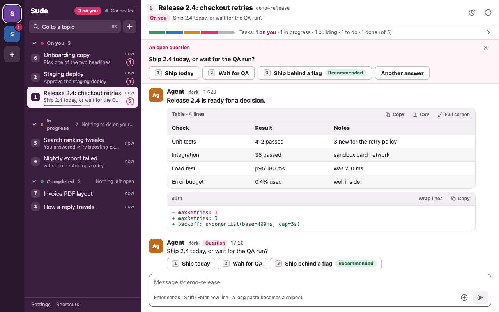
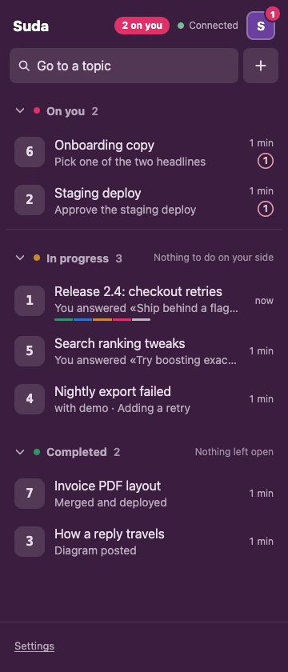
See it move
Scroll to follow a topic from the list to done.
Skip the story Try it yourself1 / 5
One thread per topic, from the first request to the finished work.
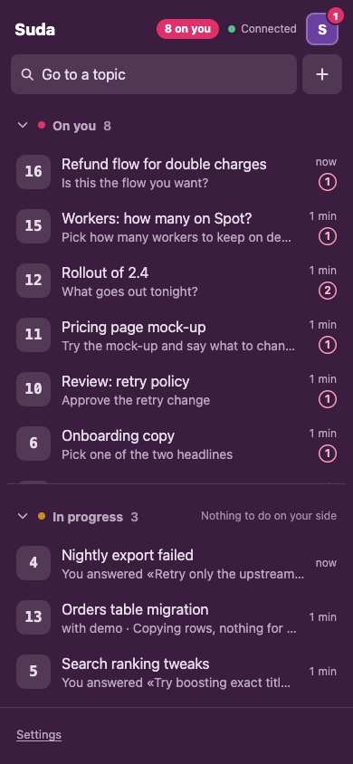
2 / 5
Each request is a task with an owner and a status. The question stays attached, with its own buttons, and the agent answers with a table or a diff, not only text.
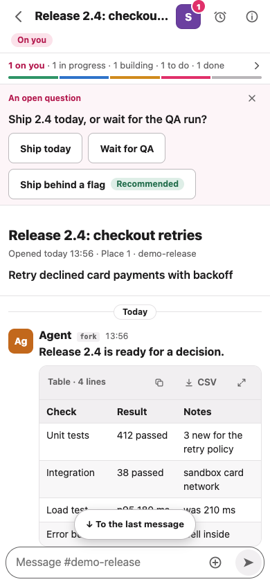
3 / 5
Buttons with the agent's recommendation. The reply waits four seconds, and Undo (or Esc) takes it back.
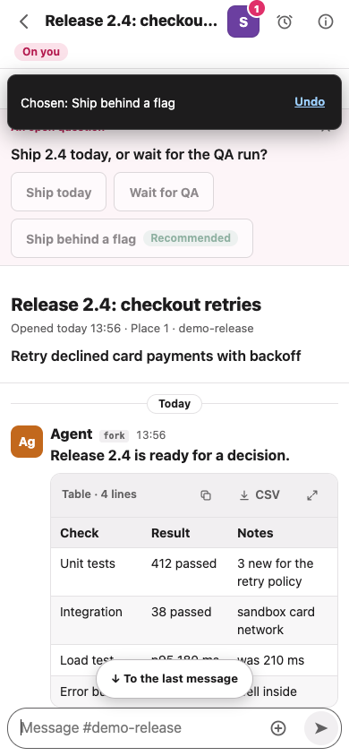
4 / 5
Progress notifies nobody. One card updates in place, not a new message for every step. Nothing is on you while it runs.
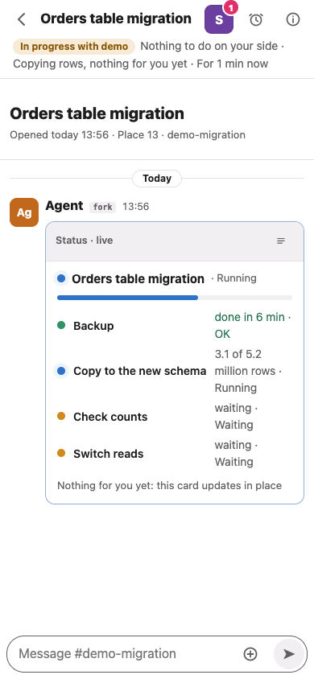
5 / 5
The numbers as a chart. A finished thread goes quiet and archives itself once nothing in it is open.
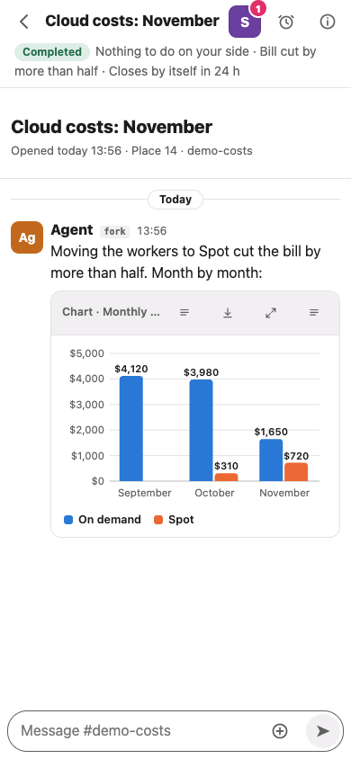
Interactive demo
Tap a topic. Answer. Watch it move.
Choose a topic from the list
A scripted demo with invented content: nothing is sent, stored or run. Keys: Tab and Enter, 1 to 3 to answer, Esc to undo.
Features
The note is written for someone who will not open the thread ("Approve the staging deploy", never "There is an update").
Several agents on one topic, one agent in several, and threads with no agent at all: a support ticket, a reminder, a decision you owe someone.
Each request is a task with an owner and a status. Yours are shown apart, and the CLI refuses to mark a thread done while tasks are open (unless forced).
Your "yes" lands on the button of the question it answers. Up to five open questions per thread, each with its own buttons.
Progress notifies nobody. On you sends a browser notification (where you enabled them), unless the thread is muted or quiet hours are on. Snooze a thread until a time you choose.
A finished thread goes quiet and archives itself once nothing in it is open.
A reply reaches an agent with the topic's summary and earlier messages, and the tasks are one command away.
Why Suda
I run 10 to 15 coding agents at once. In one chat their replies mix; with a window per agent you hunt for the one that waits for you.
Most tools answer how to run agents. Suda answers what they need from you.
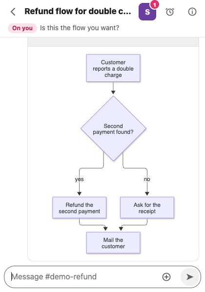
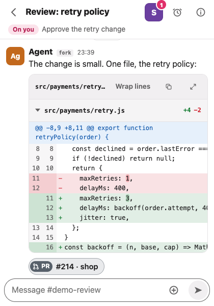
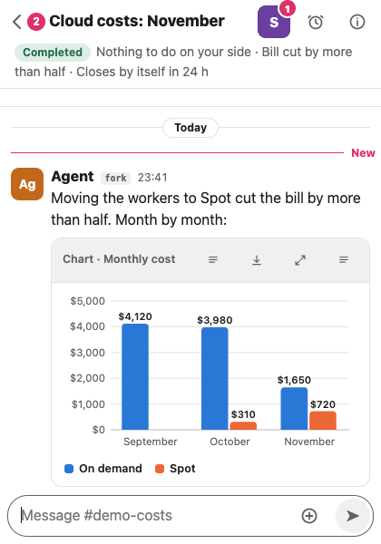
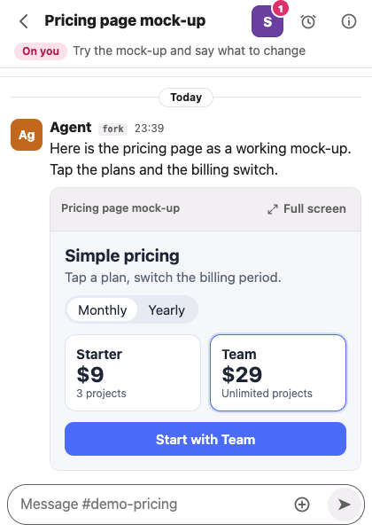
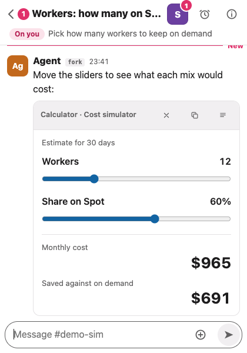
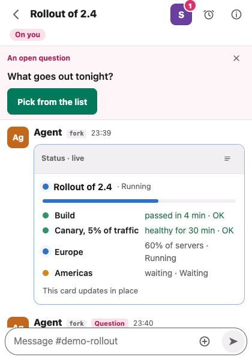
Also: tables that scroll and export, code with an exact copy button, pictures, carousels, video, long logs in a collapsed card (up to 20 MB), SVG drawings, next-step buttons inside a message, and short chips for pull requests, commits and other threads. All screenshots come from a demo board with invented content.
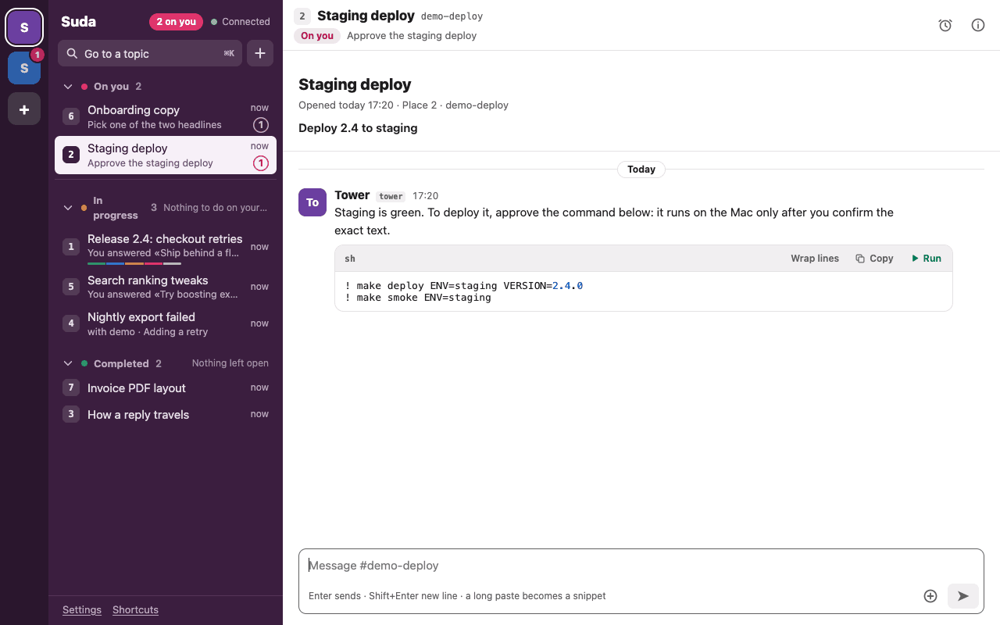
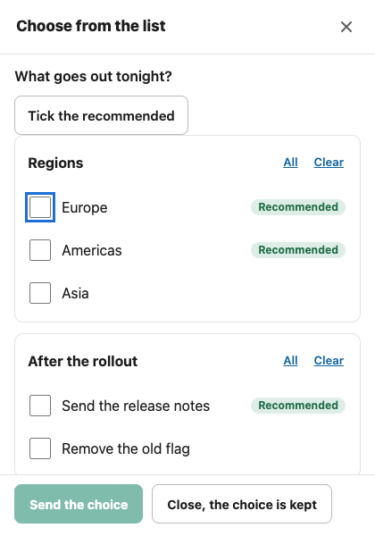
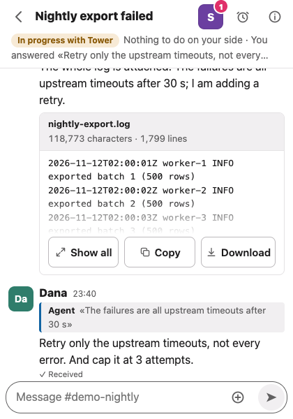
Speak. The agent gets the transcript and the recording (needs a Soniox key and a secure page).
Show. Pictures with captions. A log or a text file becomes a collapsed attachment.
Split. Give a side issue its own thread, with a quote and a link back.
Know you were heard. Under each message of yours: received, picked up, done.
How it works
You reply in the topic. One AI, the tower, carries each reply to the agent working on that topic, and the agents post results and questions straight into the thread. The tower is a go-between, not a boss: you never have to know which agent has which topic.
Any agent that can run a shell command takes part: it writes into threads with the threads CLI.
Whatever model is behind an agent, it takes part the same way.
Suda starts no agents and owns no terminals. It needs one command that tells your tower "a reply waits" (THREADS_NOTIFY_CMD). Without it nothing is lost: the tower can read threads pending whenever it likes.
Tested so far on one setup: our agents run in tuios. With tuios and Claude Code, an optional hook (live_hook.py) also shows which agents are working on a thread right now.
Phone first. One pane at a time. It is a web page you add to the home screen as an app.
Wider screens. The list beside the conversation, for example on the inner screen of a foldable.
Languages. The code and the demo are in English, left to right. A translation is a table in suda/locales/ (Hebrew, right to left, ships in suda/locales/he.json).
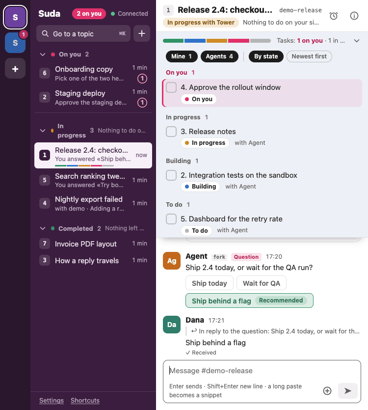
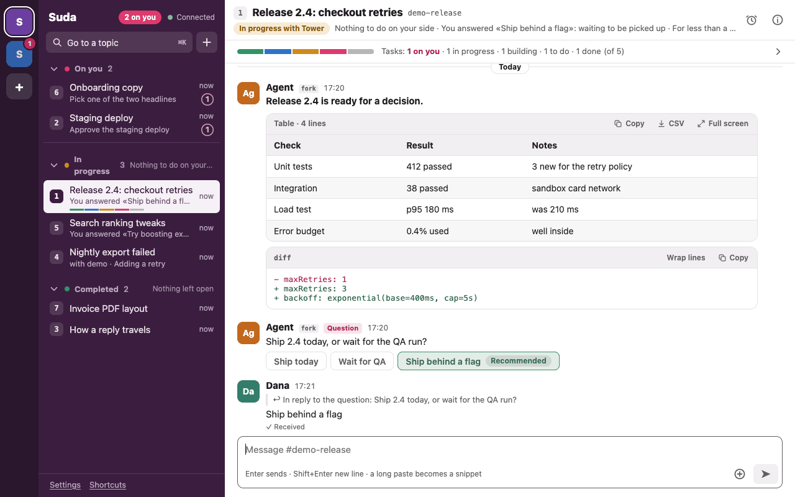
Type / in the reply box: /status, /explain and /review go to the agents; /done, /s (snooze), /urgent, /mute, /rename and /task act on the thread.
Choose several (Cmd or Ctrl click, Shift click for a range, a long press on the phone), then mark read, snooze, merge or close.
Spaces (for example a support space with its own threads), urgent threads first, merge, reactions, light and dark themes, and keyboard shortcuts (? shows them).
Security
Python standard library, no dependencies, no build step, one HTML page, a server on 127.0.0.1 only. MIT.
Host header (DNS rebinding) and the Origin of every write (CSRF), and serves only its own board folder.Details, and how to report a problem, in SECURITY.md.
Built around the topic
We use or have tried most of these, some of them every day, and they are good at what they do. From our own use and their own pages, November 2026.
| Tool | Built around | What Suda adds |
|---|---|---|
| tuios | The pane. A terminal window manager that knows what your agents are doing: sessions that stay alive, agent states, agents that message each other. It is where our agents run. | The topic, on top of the pane. |
| herdr | The agent. A runtime for coding agents that shows which agent is working or blocked, across machines and from a phone. | Which topic needs me, and what did we decide in it? |
| Claude Squad, Conductor, Sculptor | The agent session and its code. Several coding agents in parallel, each in its own worktree or container, with review of their changes. | A home for a topic that spans several agents, or has no code at all. |
| OpenHands | Conversations with agents. A self-hosted control center for coding agents and automations. | One thread per topic, across agents. |
| Devin | Its own agent. A hosted autonomous engineer you can reach from a team chat. | No agent of its own. Suda works with the ones you already run. |
| Linear with agents | The issue. A tracker for a team's planned work, where agents answer in the issue's comments. The closest in spirit. | One person's live conversation, including topics that will never be an issue. |
| Slack, or any team chat with bots | The channel. The feel we wanted, and Suda borrows it. | Whose turn it is and what is still open, with no bot or token per agent, on your own machine. |
Our setup
A starting point, if you want one. Suda works without any of them, and we are not affiliated with them.
Where our agents run: a terminal window manager that knows what each agent is doing. With it, live_hook.py shows which agents are working on a thread right now.
The coding agents themselves.
Suda on your phone from anywhere, over your own private network, while the server stays on 127.0.0.1 behind a gateway.
Quick start
git clone https://github.com/udiNur/Suda.git suda cd suda python3 suda/threads.py install # creates the board python3 suda/server.py # serves it on 127.0.0.1
Then open http://127.0.0.1:8767/threads/suda.html. Needs Python 3.9 or newer (standard library only) and a modern browser. macOS and Linux.
python3 docs/demo/demo.py prints the address of a throwaway demo board.threads CLI.THREADS_NOTIFY_CMD so your tower learns that a reply waits.